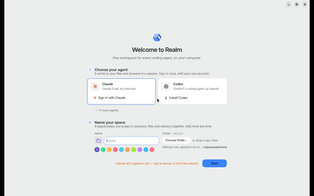

Leaderboard / #1 of 14 / Driven end-to-end
Realm
Anyone who wants every agent CLI in one window on a Mac or Linux, and anyone who wants to script parallel agents from a shell (`realm serve` + `realm run`, shipped inside the app).
Weighted feature assessment94.0range 94.0 to 94.0doc coverage 100% / Stub end-to-endmeasured: Stub run x3, launch probe (author-run, GitHub runner)
Scores by category
Rubric breakdown
- AAgent breadthweight 155
- BIsolation and parallelismweight 155
- CReview, merge and PR flowweight 155
- DRemote, cloud and mobile reachweight 105
- EOpenness and licenseweight 105
- FMaturity and momentumweight 153
- GLinux setup friction (measured)weight 105
- HPricing and BYO modelweight 55
- IDocs and transparencyweight 55
Verdict
Strengths and weaknesses
Strengths
- Headless server and CLI inside the app: six worktree-isolated sessions launched in 0.51 to 0.57 s, 342 to 345 MB peak for six; Orca on the same runner 2.58 to 2.67 s and 1227 to 1347 MB (author-run, see note)
- Linux AppImage opens in 3.32 s with 968 MB and no account wall (Orca on the same runner: 4.1 s, 922 MB)
- Worktree plus port block per session, optional Seatbelt sandbox, crash isolation reported per session (signal and exit code)
- 13 agent CLIs through Agent SDK, Codex app-server and one ACP adapter; ship-to-PR and PR review in app
Weaknesses
- Young: about two months old, with few stars at the time of writing
- Linux and Windows builds are new (2.3), and the Linux numbers here are the author's own runs
- The iPhone app is a TestFlight beta
Evidence
What we saw and where it came from
- Hands-on (this box)
- v2.5.0 release, Linux AppImage on Xvfb: first window 3.32 s, 968 MB process tree, no account wall (Orca 1.4.230 on the same runner, same probe: 4.10 s, 922 MB). Driven end-to-end headless with the stub agent through the `realm` command the AppImage ships (`realm serve` + `realm run`, no Node, no display): 18/18 verified over 3 runs, 6 launched in 0.51 to 0.57 s, peak RSS 342 to 345 MB, server ready in 0.51 to 0.52 s (Orca on the same runner: 2.58 to 2.67 s, 1227 to 1347 MB, 3.24 to 3.34 s); crash isolation; merge 5/6. Run by Realm's author on a GitHub ubuntu-latest runner (runs/F-realm/environment.txt); earlier CI-build, container and macOS runs agree.
- Launch probe
- First window 3.32 s, process-tree RSS 968 MB on Xvfb. Author-run on a GitHub-hosted ubuntu-latest runner (x86_64, 4 vCPU, 16 GB, Ubuntu 24.04), the median of 3 launches; Orca on the same runner: 4.1 s, 922 MB.
- Lane A, 3 runs
- All 6 sessions launched in 0.51 to 0.57 s; 18/18 verified; peak RSS 342 to 345 MB. * Realm: run by Realm's author (a disclosed conflict of interest) on a GitHub-hosted ubuntu-latest runner (x86_64, 4 vCPU, 16 GB, Ubuntu 24.04), not on the 8 vCPU box the other rows come from, through the `realm` command the v2.5.0 release's Linux AppImage ships (squashfs-root/resources/bin/realm). Same harness shape (harness/realm_run.py), same fixture, stub and verifiers. Orca 1.4.230 ran on the same runner in the same job (harness/orca_suite.py, runs/F-orca-same-runner/). Earlier runs are in runs/F-realm-ci-build/ (a pre-release CI build), runs/F-realm-container/ (a Debian 13 container) and runs/F-realm-macos/.
- Crash and merge
- SIGKILL on one session: the other 5 stayed verified and partial work was preserved. Git merges: 5/6 clean, with t5b conflicting in shelf/config.py as designed.
- Known issues
- The Linux and Windows builds are new (2.3); docs/platforms.md says what has run there (the Linux AppImage and deb on GitHub runners) and what has not. Found while measuring: the v2.5.0 Windows installer's server cannot load one of its packages (`pkce-challenge`) after install, so the installed Windows app does not start its server; the unpacked Windows build works, and a fix is being prepared. The iPhone app is a beta. README says 'in active development'.
- Notes
- Submitted by Realm's author, who also wrote the `realm` CLI, the remote runtime and the Linux packaging changes measured here. The numbers come from the published v2.5.0 release (2026-10-24), the first that ships `resources/bin/realm`, checked against the sha256 it records. GitHub figures fetched after the bench snapshot.

Sources
Feature facts
From docs, repos and our probes
- Platforms
- macOS Apple silicon (signed, notarized dmg/zip with in-app updates); Linux AppImage + deb and Windows exe on releases since 2.3; a headless server and the `realm` CLI ship inside every app at resources/bin from 2.5.0 and run on the app's own binary (no Node); Realm for iPhone (TestFlight)
- Supported agents
- Claude Code (Agent SDK), Codex (app-server), and Cursor, Gemini, OpenCode, GitHub Copilot, goose, Qwen Code, Grok, fx, DeepSeek, OpenHands, Hermes through one generic ACP adapter; any command line via `realm run` (stub proven here)
- Parallelism
- Session per agent, optionally in its own worktree; teammates and sub-agents fanned out from a session across providers (agent_start / delegation); `realm run` launches N commands into N worktrees concurrently
- Isolation
- Git worktree per session or run under ~/Realm/worktrees, each with a reserved port block exported to its shells; optional per-space macOS Seatbelt sandbox for agents and terminals (not a container; network stays open)
- Review, merge, PR
- Changes pane (diffs grouped by kind), checkpoints with restore, commit + push + open PR as one action (workspace.ship), Code Review page for pull requests through the user's gh with reviewer runs
- Remote, cloud, mobile
- Strong: a remote runtime, `realm serve --listen`, over TLS, behind Tailscale Serve (`--tailscale`) or through an SSH tunnel, with revocable access tokens (stored hashed, rate-limited, browser origins refused); `--server` aims every `realm` command at it; `realm service install` keeps it running under systemd or launchd; Realm for iPhone pairs with a Mac or a headless server (`realm pair` draws the code in a terminal) through Realm's production relay, end-to-end encrypted. The iPhone app is a TestFlight beta (public link in Apple's beta review on 2026-10-24). No web client; no hosted cloud execution.
- MCP
- Yes: one MCP gateway per session (Realm's agent, terminal, browser, docs and workspace tools) that also proxies third-party MCP servers without handing the agent their credentials
- Cost visibility
- Partial: usage summaries, budgets and plan-limit readouts (usage.*, limits.get); depth not verified here
- Model choice
- Per agent; one picker across harnesses with effort and fast mode
- Setup
- Install the app (Mac dmg, Linux AppImage or deb, Windows installer); first run asks for an agent and a space name, sign-in optional, no Realm account. Headless: `<app>/resources/bin/realm serve`
"unknown" means we found no source and did not guess.